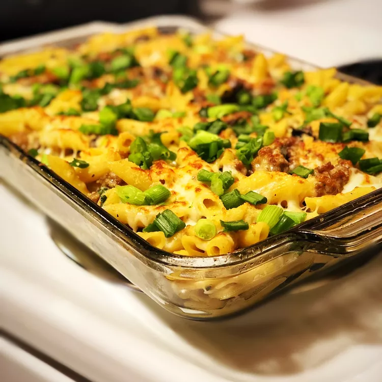

Baked Pasta with Sausage and Mushroom

This easy-to-make, flavorful dish will impress your family or friends and have them coming back for more!
Ingredients
- 1lb penne pasta
- 3 tbsp extra-virgin olive oil
- 1lb Italian sausage
- 1lb baby portobello mushrooms (sliced)
- 3 cloves garlic (minced)
- 1.5 cups heavy cream
- 0.5 cup Parmesan cheese (grated)
- 1 (8oz) package shredded whole milk mozzarella
- salt and pepper, to taste
How to make it
- Preheat the oven's broiler and set the oven rack about 6 inches from the heat source.
- Bring a large pot of lightly-salted water to a boil; cook the penne uncovered, stirring occasionally, until tender yet firm to the bite, about 11 minutes. Drain and return to the pot.
- Meanwhile, heat 1 tablespoon of the olive oil in a large skillet over medium-high heat. Cook and stir the sausage in the hot oil until crumbly and no longer pink, about 7 minutes: remove from the skillet, leaving the fat in the pan, and set aside. Pour the remaining 2 tablespoons of olive oil into the skillet and add the mushrooms and garlic. Cook and stir until the mushrooms have browned and begun to release their liquid, about 5 minutes more. Return the sausage to the skillet and pour in the heavy cream. Season with salt and pepper and return to a simmer, cooking until the sauce begins to thicken, about 5 minutes more. Pour the sauce over the pasta and stir. Stir in 1/2 cup mozzarella and Parmesan. Pour into a 9x13-inch baking dish and sprinkle with remaining 1/2 cup mozzarella cheese.
- Broil in the preheated oven until the mozzarella cheese is bubbly and golden brown, 5 to 7 minutes.
Credit